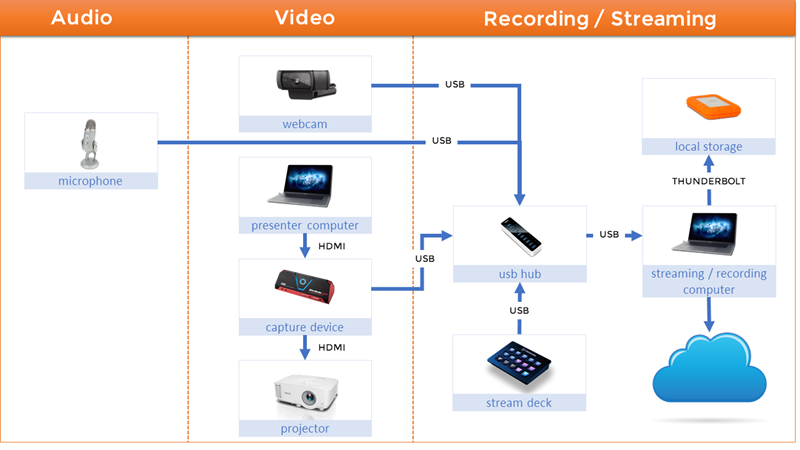
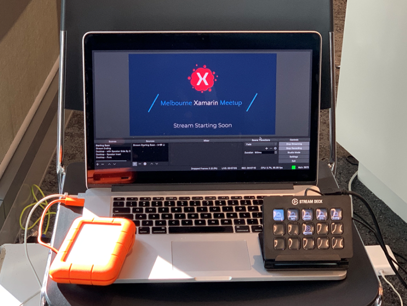
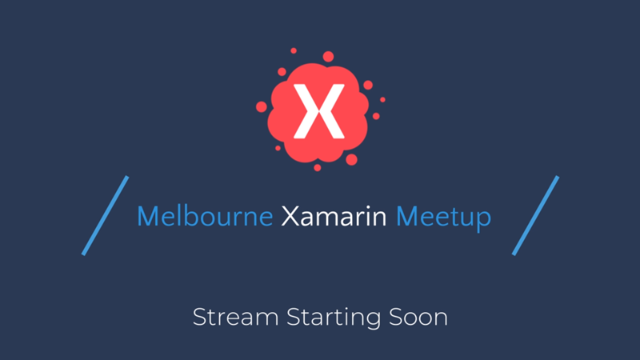
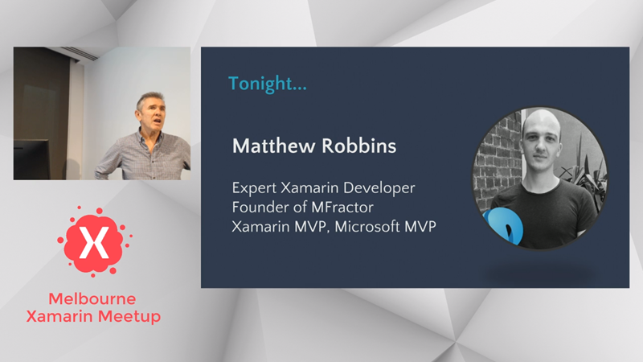
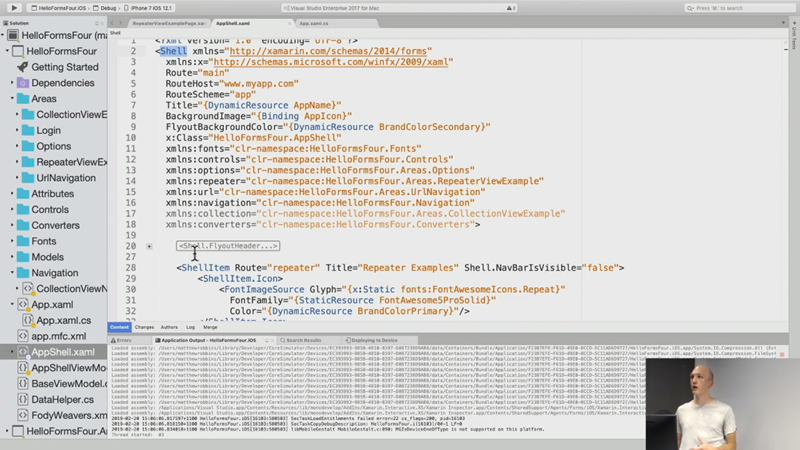
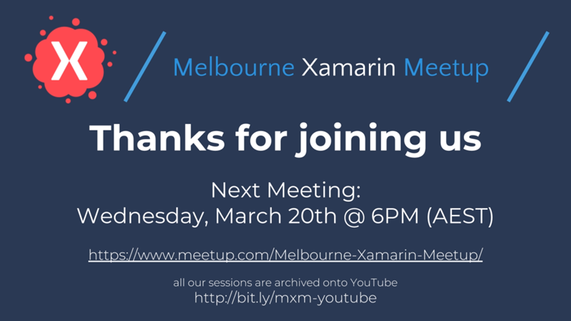

How to stream a meetup
Have you ever wanted to record or live stream your meetup? It’s not as hard as you might think. In this post, we will go through how we stream the Melbourne Xamarin Meetup live to the Internet via Twitch.
Be aware that there are many different possible solutions and technologies you could use to stream, depending on what your goals are, what your budget is, and what equipment you already have available. What we will discuss here is what we have used and found successful, bearing in mind we try and keep a fairly minimalist setup.
Let’s get straight into it. This is the setup that we currently use:

Hardware Breakdown
- Microphone: Blue Yeti USB Microphone
- Webcam: Logitech C920 Webcam
- Presenter Computer: PC/Mac doesn’t matter as long as it has a HDMI output.
- Capture Device: AVerMedia Live Gamer Portable 2 Plus
- Projector: Whatever as long as it has a HDMI input.
- USB Hub: Anker USB 3.0 10 Port Hub
- Stream Deck: Elgato Stream Deck (optional)
- Local Storage: LaCie Rugged Thunderbolt and USB 3.0 Portable Drive (optional)
- Streaming / Recording Computer: I use an old-ish Macbook Pro 15”, but PC is cool too.
- Bonus Item: Ottertooth Selfie Stick Tripod for the webcam.
Okay, so that’s what we currently use, and it seems like a whole bunch of hardware. Let me break it down a little more with regard to the decision process for each of the various aspects of the setup.
Audio
Audio is crucial, if your audience can’t hear the presenter then really there isn’t much point broadcasting your meetup at all. I use a Blue Yeti USB Microphone because it’s a very versatile microphone which allows you to have “directional” recording so that you can focus on the speakers audio but reduce the sound coming from the audience shuffling in their seats.
Pro Tip: The directional aspect is a double edged sword - It does reduce “background” noise, but it also means it’s hard to pick up questions being asked - as such, I ask the presenters to always make sure they repeat any questions before answering them (which arguably is good practice anyway).
I’d highly recommend avoiding the audio input on your webcam or PC if you can avoid it. It will probably sound rubbish.
Video
Webcam: Technically, you don’t need to have a camera at all if you don’t want to have video of the presenter. However, having video of the presenter as well as their desktop really makes a much compelling session. We use a Logitech C920 Webcam, but any webcam would do. Having said that, the C920 is a pretty popular choice for streamers because it’s low cost but still gives a pretty good image. (also, I just happen to have one laying around)
Pro Tip: We mount the webcam on a little Selfie Stick Tripod. This allows us to have better control over the position of the camera. Having a webcam mounted on a monitor doesn’t give a great camera angle. Make sure you get one that extends > 1m in height so it can see over the desk.
Presenter Computer: This is the source for slides and code the presenter is showing. The only requirement we have is that the presenter computer has a HDMI output, so presenters can use a PC or Mac.
Pro Tip: Don’t put a burdon on your presenters in terms of setting up hardware or software (they have enough to focus on already). You might notice in our configuration, all the presenter needs to do is plug in a HDMI cable - so the whole recording process is completely transparent to them.
Capture Device: You will need a way of capturing the presenters desktop. We use a Avermedia capture device, but there are others on the market. Another popular choice is the Elgato HD60(s). The idea is that you pass the HDMI from the presenters machine through the capture device and then out to the projector. This gives you a way to “capture” the video on the way through and send to your broadcasting machine.
The reason I chose the Avermedia is that it has support for recording directly onto an SD card on device, which means that if all of my computer hardware fails (or I get a BSOD) I could still record the presentation onto the card. The Avermedia also supports 4K - but in reality I can’t see that being useful for some years to come. So you could probably go for a cheaper option.
Record / Streaming
USB Hub: With all this hardware, you are going to have a lot of USB inputs - probably more than you have ports for on your computer (especially if you use a Mac). Having a hub also simplifies your life because you will essentially just have a single USB coming into your broadcasting computer.
Pro Tip: Prefer a powered USB 3.0 hub. There’s lots of data going through and also the devices need power.
Stream Deck: This is COMPLETELY OPTIONAL. I use it to transition easily between scenes (full webcam, presenters desktop, presenters desktop with webcam overlayed). It is super convenient and means I don’t have to be clicking around software, but as I said, it’s completely optional.
Pro Tip: If you are going to get a Stream Deck, make sure you get the one with 15 buttons.

Local Storage: Again, this is optional (if you have a large drive in your broadcast machine). I have a macbook with a 256G drive and it’s always full, so having an external drive works for me. The reason I even need hard drive space is because I stream out to Twitch, but I also record locally as well. This means that even if the internet goes down, I still have a recording.
Pro Tip: Always record locally as well.
Recording / Streaming Computer: I use a Macbook Pro 15” (Mid 2015) / 2.5Ghz i7 / 16GB Memory. It handles the recording process easily. But given the software we are going to use (OBS) works on both PC and Mac feel free to use whatever you want. However, you will need to have a reasonably powerful machine, because it’s going to bo doing some video encoding.
Pro Tip: Test, test test. Always test to make sure that your machine can keep up with the CPU load before you use it in anger.
Software
We now have a bunch of hardware configured and connected, but how do we put all of this together and stream and/or record the session.
Open Broadcast Software (OBS) Studio: This is the (software) heart of the solution. OBS is free software and it works on Windows / Mac and Linux. Essentially what OBS allows you to do is create Scenes with your various Audio / Video sources and output them to your favorite streaming platform and/or record locally. There is a lot of information on the internet about configuring and using OBS, so I won’t try and reproduce that here, but here are the key things unique to our environment.
We have 4 Scenes setup in OBS, but of course do whatever is right for you setup. Our four basic scenes are:
Starting Soon - This is what we show as everyone is getting ready

Desktop - with speaker side by side - A nice scene for doing introductions and general admin before getting into the presentation.

Desktop - with speaker inset - A scene to focus on the presentation.

Stream Ending - This is what we show for a minute or so once the stream finishes, we normally put the date of the next meeting on this page

Also, here are some settings I use in OBS that you might find useful:
Output -> Rate Control -> CBR - Twitch seems to handle Constant Bit Rate streams a little better than Variable Bit Rate (VBR).
Output -> Bitrate - 2500. That seems to be a nice compromise. Remember, you don’t want to output at such a high bitrate that all of your audience is buffering.
Video -> Output (Scaled) Resolution - 1280x720. We output at 720 because again, it isn’t too taxing for people watching the stream
Video -> FPS - 30. You don’t need 60 frames per second for a coding presentation.
Pro Tip: OBS has an
Auto Configuration Wizardwhich will help you set a baseline for your settings giving account to the power of your computer and the bandwidth available.
Twitch: We use Twitch as our streaming platform. I have found Twitch to have higher quality streams than Youtube live. It’s also starting to get some good developer focused channels as well. Here are a couple of important things you’ll want to setup in twitch:
- Make sure you check a setting in your Twitch dashboard to
Store past broadcasts, if you don’t recordings will not be available after you have finished your stream. - Even if you do store your past broadcasts, Twitch will only keep them for 14 days. We also have a YouTube channel which is where we archive our recordings to. And the nice thing is, Twitch has a way of pushing your videos straight across to Youtube without you having to download and re-upload them to Youtube.
- Make sure you update your
Stream Informationbefore you stream to indicate the title of the presentation - Make sure you Tweet out before that you are going live, so people have time to tune in. We will normally start broadcasting about 5-10 minutes before our presentation to give people time to tune in.
- Have someone with a mobile device and the Twitch App installed to monitor the Twitch chat, so you can relay “questions from the internet”
But, my internet sucks
We are fortunate to have pretty good bandwidth and stability where we hold our meetups, so streaming has not been a problem. However, not everyone is so fortunate. If you fall into this camp then remember that with OBS you don’t HAVE to stream, you can use it purely to record the session onto your local hard drive and then upload later on.
It’s simple, in OBS there are two buttons: Start Recording and Start Streaming. If you just want to record locally and not stream, just hit the Start Recording button. If you want to stream AND record locally (which is what I’d recommend) then hit both buttons. This is also one of the reasons I love OBS, it’s the same bit of software regardless of if you want to stream, record for later, or both.
Future improvements
Our streaming setup is pretty basic, and there are always ways to improve it. Having said that, it has served us pretty well. Here are the changes I’d make if I had more money / time:
-
Audio: Get a wireless Lavalier microphone. This would give us much better speaker audio, and it would also allow the speaker to walk around the room without impacting audio.
-
Video: Upgrade from a simple webcam to a DSLR or Camcorder with HDMI output. This would give better quality video. Also, If we had this on a tripod with a pan head we could follow the speaker as they move around. Even better, if we had multiple cameras, we could have different camera angles.
I hope this has given you some insight into the setup we use for streaming at the Melbourne Xamarin Meetup. If you have any questions or comments or suggestions please shoot them through, or if you want any further information let me know, I’m always happy to help however I can.
Happy Coding, ❤ Kym